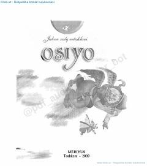

OJOsiyo xalqlarining eng sara va qiziqarli ertaklari to'plami.
Mazkur kitob "Jahon xalqlari ertaklari" turkumining Osiyo mintaqasiga bag'ishlangan ilk qismi bo'lib, unda qardosh va qit'adosh xalqlarning eng sara ertaklari jamlangan. To'plam yosh kitobxonlarda kitobsevarlik tuyg'usini kuchaytirish hamda turli xalqlarning og'zaki ijodi bilan tanishtirish maqsadida tayyorlangan.